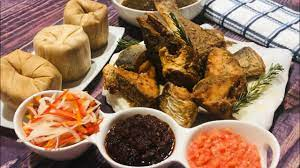

Kenkey

Kenkey with Fish
Description
Also called Nkran Dokono or Accra Kenkey,
the Ga Kenkey is most of the times sold at night along the streets.
Ga Kenkey is a popular carbohydrate food in Ghana.
It is mostly served with pepper sauce, shito and fried fish or tilapia.
Ingrdients
- corn dough
- corn hust
- salt
- water
Steps in Cooking Kenkey
- Put half of the corn dough in a bowl and mix with water
- Boil corn dough until half way cooked
- Spread the dough on a large clean saucepan and add the remaining raw corn dough using a wooden
ladle.
- Mix together thoroughly.
- Mould into preferred pieces/size.
- Wrap each with the corn husks
- Placed some corn husks at the bottom of a big saucepan and arrange the wrapped dough nicely on it.
- Add enough water, cover and boil for about 10 minutes.
- Kenkey is ready.
- erve with hot pepper sauce, chilli sauce, shito, stew or soup